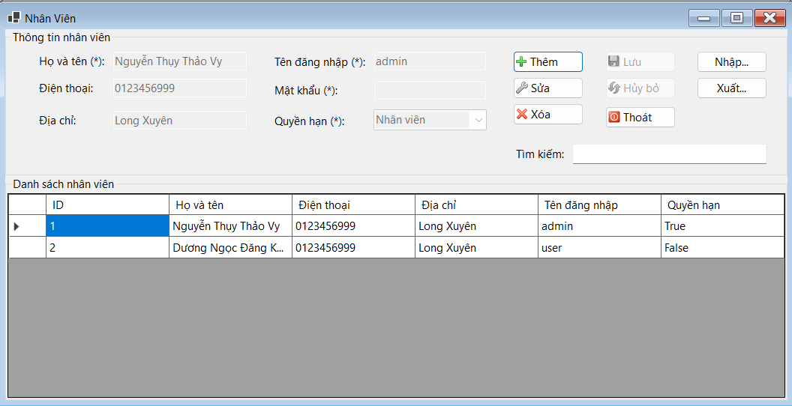

Hướng dẫn sử dụng màn hình Nhân viên.
Bước 1: Mở menu quản lý trên thanh công cụ.
Bước 2: Bấm chọn mục Nhân viên.
Bước 1: Tại giao diện Quản lý nhân viên, nhấn vào nút Thêm trên màn hình.
Bước 2: Nhập các thông tin bắt buộc sau: Họ và tên, tên đăng nhập, mật khẩu, quyền hạn.
Bước 3: Nhấn vào nút Lưu, các thông tin sẽ được lưu vào cơ sở dữ liệu.
Bước 1: Tại giao diện Quản lý nhân viên, nhấn vào nút Sửa trên màn hình.
Bước 2: Chọn nhân viên cần sửa trên bảng dữ liệu. Thông tin sẽ được hiển thị lên các ô văn bản tương ứng.
Bước 3: Nhập các thông tin cần sửa.
Bước 4: Nhấn vào nút Lưu để hoàn tất chỉnh sửa thông tin nhân viên
Bước 1: Tại giao diện Quản lý nhân viên, chọn Nhân viên bạn muốn xóa.
Bước 2: Nhấn vào nút Xóa trên màn hình. Chọn Yes để xóa Nhân viên khi cửa sổ xác nhận của hệ thống hiện ra.
Bước 3: Chọn Yes để xóa Nhân viên khi cửa sổ xác nhận của hệ thống hiện ra.
Bước 1: Tại giao diện Quản lý nhân viên, nhấn vào nút Nhập trên màn hình.
Bước 2: Chọn file excel bạn muốn nhập trong hộp thoại hiện lên.
Bước 3: Hệ thống sẽ hiển thị kết quả nhập file trên màn hình.
Bước 1: Tại giao diện Quản lý nhân viên, nhấn vào nút Xuất trên màn hình.
Bước 2: Chọn thư mục bạn muốn lưu file excel. Đổi tên cho file excel nếu cần ở ô File name.
Bước 3: Hệ thống sẽ hiển thị kết quả xuất file trên màn hình.